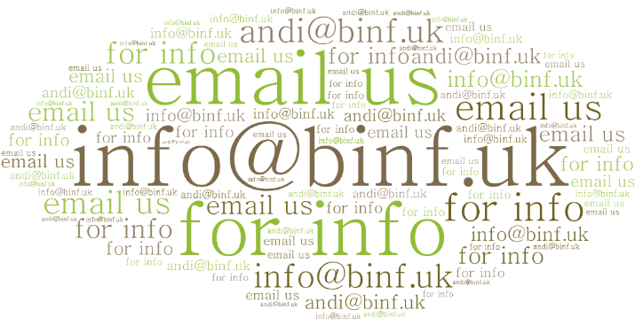

Bournemouth International & Neurodiverse Friends are happy to announce their new home at Serenity Social Hub.
Note: we cannot currently offer emergency crisis support. If you are in need of urgent support, the National Autistic Society provide a number of contact links.
Signing this petition will help expose the corruption, toxic culture and institutional bullying. This will improve the genuine protection of the community. We would also like to see more members of the public attending misconduct hearings as this will expose the biased reporting.
Contributions from the Academic Community in Bournemouth.
If you would like a link to your video posted below please email us. We support students and staff of English language schools, colleges and universities in Bournemouth in promoting autism and neurodiversity awareness and acceptance amongst their colleagues.
We are a group of good friends from neurodiverse backgrounds with experience in academia. We reach out to others from similar backgrounds regardless of student status or employment status. We have no office (unless you include Serenity Social Hub!). No expenses. No fundraising. Just volunteers who have experienced some form of mental health illness themselves during their time within academia. There are emerging reports that university provided wellbeing services are inadequate or in some cases simply not accessed by those needing support during a crisis. More info on the WONKHE website.
The aim of the friends groups is to spot mental health decline amongst our peers before it declines to crisis point. Just being able to ask someone who is withdrawing if they are OK could save a life.
Python Coding
Interested in learning the basic of the Python programming language?
During this time of many wars and displacements, there will be many immigrants expected to arrive in the UK. Please sign the petition to help protect these people and other international adults who are vulnerable on their arrival to a new culture.
Safeguarding and demonstration is a God honouring act. Proverbs 31:8-9 gives a biblical mandate to protect vulnerable groups. ‘Speak up for those who cannot speak for themselves, for the rights of all who are destitute. Speak up and judge fairly; defend the rights of the poor and needy.’ Safeguarding is not something we do just to please the government. It is not a tick-box exercise. It is a legitimate and God honouring ministry.
Language Exchange
Learning a new language is a great way to improve your mental health. Learn with us in a casual and relaxed manner. We currently have volunteers to help you learn basic Mandarin, Cantonese, Korean, Vietnamese and English. As with all our activities, this is open to both students and non-students.

Practice speaking English - 学英文口语
Most Mondays at 5pm. Serenity Social Hub. You can just drop in but we advise emailing us to confirm.
Homestay Accommodation
If you are an international student looking for homestay accommodation, please contact us for more info. Our hosts are autism aware and are DBS checked.
Raising Autism Awareness and Community Protection
Our supporters spend a lot of time in the community raising awareness and looking out for people who may need support. We engage those working in the public service sector that we meet in the community and discuss topics such as neurodiversity, suicide and bullying. It is hoped that creating a better awareness will protect the most vulnerable in the community.